Recipe · Sourdough · Two days
The Larkspur country loaf
A crackling, open-crumbed sourdough for home ovens. One Dutch oven, no mixer, and a baker a click away at every step.
- Active
- 45 min
- Total
- 36 h
- Makes
- 2 loaves
- Hydration
- 75%

Ingredients for two loaves
| Ingredient | Grams | Baker's % |
|---|---|---|
| Larkspur bread flour | 800 | 80% |
| Stone-ground whole wheat | 200 | 20% |
| Water, 30 °C | 750 | 75% |
| Levain, from step 1 | 200 | 20% |
| Fine sea salt | 20 | 2% |
Method
-
Day 1 · 9 pm · 5 min
Build the levain
Mix 50 g active starter with 100 g warm water and 100 g whole wheat flour in a jar. Cover loosely and leave overnight at about 24 °C.
Ready when it has doubled, the top is domed and bubbly, and it smells pleasantly sour, like yogurt.
Is my levain ready? -
Day 2 · 8 am · rest 45 min
Autolyse
Mix 800 g bread flour, 200 g whole wheat and 750 g water at 30 °C until no dry flour remains. Cover and rest. The flour hydrates and the dough starts building strength on its own.
Why rest the dough? -
8:45 am · 10 min
Add levain and salt
Add 200 g levain and squeeze it through the dough with a wet hand. After 20 minutes, sprinkle in 20 g salt with a splash of water and pinch until it disappears.
Help mixing it in -
9:30–11 am · 4 sets
Stretch and fold
Every 30 minutes, lift one side of the dough with wet hands, stretch it up and fold it over. Turn the bowl and repeat on all four sides. It goes from shaggy to smooth and elastic.
My dough is too sticky -
Until about 1 pm
Bulk fermentation
Leave the dough covered after the last fold. At 24 °C, bulk takes four to five hours from adding the levain. Warmer kitchens are faster, cooler ones slower.
Done when the dough has grown by about half, is domed and jiggly, and shows bubbles on the top and sides.
Is bulk done? -
1 pm · rest 30 min
Divide and pre-shape
Tip the dough onto an unfloured counter, cut it in two, and round each piece into a loose ball with a bench scraper. Let them relax, uncovered.
Dough spreading flat? -
1:30 pm · 10 min
Shape
Flour the top, flip, and fold into a tight round: bottom up, sides in, top down, then roll it toward you to build tension. Place it seam side up in a floured basket.
Help with shaping -
Overnight · 12–16 h
Cold proof
Cover the baskets and refrigerate at 4 °C. The cold deepens the flavour and makes the dough much easier to score.
Can I proof longer? -
Day 3 · 8 am · 45 min
Bake
Preheat the oven with a Dutch oven inside to 250 °C for 45 minutes. Turn a loaf onto parchment, score one confident curve at a shallow angle, and bake 20 minutes with the lid on, then 25 minutes uncovered at 230 °C, until deep brown.
Wait an hour before cutting. The crumb is still setting.
Troubleshoot my bake